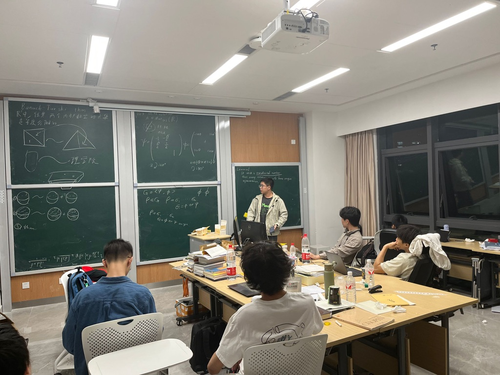

Abstract
In this talk, we introduce the famous Banach-Tarski Paradox, a result in set theory and geometry which states that it is possible to decompose a solid sphere in three-dimensional Euclidean space into a finite number of non-measurable pieces and reassemble them, using only rigid motions, into two identical copies of the original sphere. This paradox highlights the counterintuitive consequences of the Axiom of Choice and its implications in modern mathematics.
我们介绍著名的巴拿赫-塔斯基悖论，这一悖论是集合论和几何学中的重要结果。它指出，在三维欧几里得空间中，可以将一个实心球分解为有限个不可测的部分，然后通过刚性运动将这些部分重新组合成两个与原球完全相同的球体。这一悖论揭示了选择公理的反直觉结果及其在现代数学中的深远影响。

